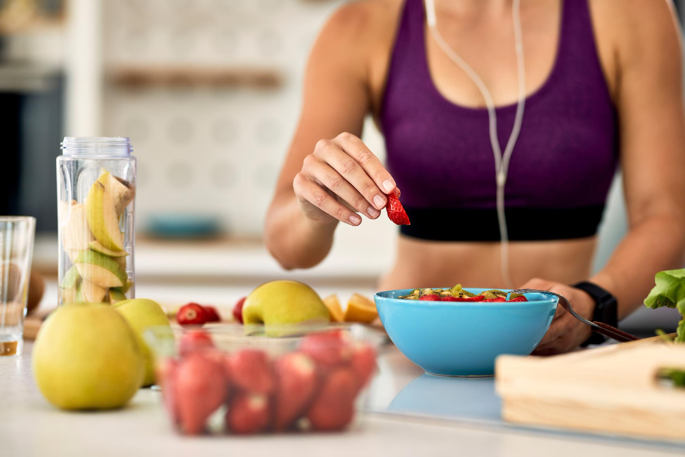

La Alimentación, el Desgaste Glucogénico y el Ciclismo: Un Equilibrio Vital
Publicado el 26 de septiembre de 2023
El ciclismo es un deporte desafiante que requiere una gran cantidad de energía. Cuando te encuentras en la carretera o en las montañas, pedaleando kilómetros y enfrentando colinas, tu cuerpo depende en gran medida del glucógeno, una forma de almacenamiento de carbohidratos, para mantener la energía y el rendimiento. En este artículo, exploraremos la relación entre la alimentación, el desgaste glucogénico y el ciclismo, y cómo puedes mantener un equilibrio vital para optimizar tu rendimiento sobre dos ruedas.
El Ciclismo y el Glucógeno: Una Alianza Fundamental
Para cualquier ciclista, el glucógeno es una fuente esencial de energía. Se almacena en los músculos y el hígado en forma de azúcares complejos que se descomponen durante el ejercicio para proporcionar energía inmediata. A medida que pedaleas, tus músculos consumen glucógeno para mantener el ritmo y superar las distancias. Sin un suministro adecuado de glucógeno, podrías experimentar fatiga prematura y ver disminuido tu rendimiento en la bicicleta.
La Importancia de la Alimentación
La alimentación desempeña un papel crucial en la gestión de tus reservas de glucógeno. Aquí hay algunos consejos clave para mantener un equilibrio adecuado:
- Carbohidratos de Calidad: Los carbohidratos son la fuente primaria de glucógeno. Incorpora carbohidratos de calidad en tu dieta, como granos enteros, frutas, verduras y legumbres. Estos alimentos proporcionan una liberación sostenida de energía.
- Planificación de Comidas: Come comidas equilibradas antes de tus paseos en bicicleta. Un desayuno rico en carbohidratos es esencial para cargar tus reservas de glucógeno antes de una larga jornada de ciclismo.
- Suplementación Inteligente: En paseos largos o intensos, considera llevar contigo suplementos de carbohidratos en forma de geles o bebidas deportivas. Estos productos pueden ayudarte a mantener un flujo constante de energía.
El Desgaste Glucogénico y la Recuperación
El desgaste glucogénico durante el ciclismo es inevitable. A medida que quemas glucógeno para mantener tu ritmo, tus reservas disminuyen. La recuperación es clave para restaurar estas reservas y prepararte para tu próxima aventura en bicicleta. Aquí tienes algunas estrategias de recuperación efectivas:
- Reponer Carbohidratos: Después de montar, consume una comida rica en carbohidratos y proteínas dentro de las dos horas posteriores al ejercicio. Esto ayudará a recargar tus reservas de glucógeno.
- Hidratación: Mantén un adecuado equilibrio de líquidos. La hidratación adecuada es esencial para la recuperación y el rendimiento continuo.
- Descanso: Dale a tu cuerpo tiempo para recuperarse. El sueño de calidad es esencial para la restauración de las reservas de glucógeno y la recuperación muscular.
Escuchar a tu Cuerpo
Cada ciclista es único, y las necesidades nutricionales pueden variar. Aprende a escuchar a tu cuerpo y a ajustar tu alimentación según las señales que te envíe. Experimenta con diferentes estrategias y descubre lo que funciona mejor para ti en términos de alimentación y recuperación.
En conclusión
El ciclismo y el desgaste glucogénico están estrechamente relacionados, y una alimentación adecuada desempeña un papel fundamental en tu rendimiento y bienestar en la bicicleta. Mantén un equilibrio vital a través de una dieta balanceada y una buena recuperación, y estarás en el camino correcto para aprovechar al máximo tus aventuras ciclistas. ¡Pedalea fuerte y come inteligentemente!